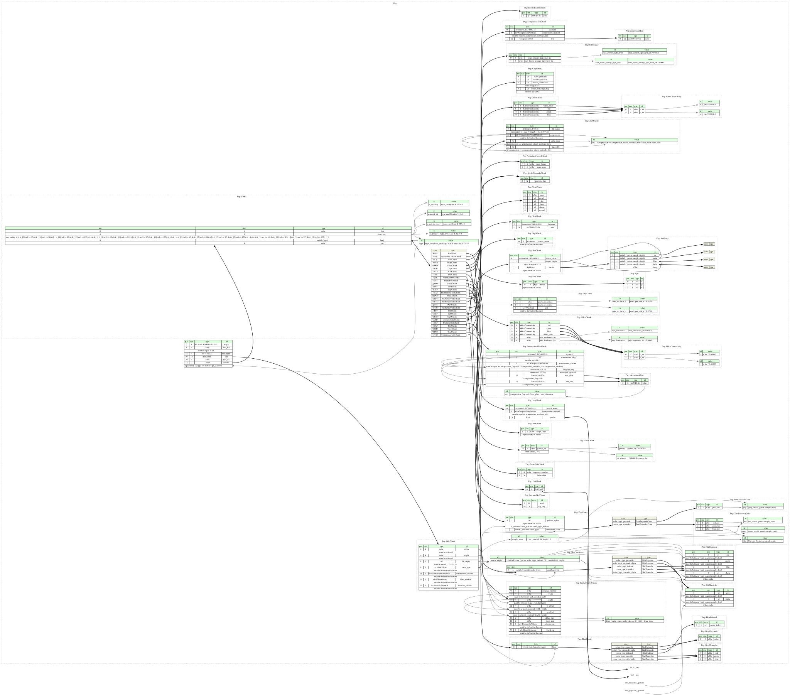

NOTICE: Many of the documentation comments (or docstrings) in this file were copied from or derived from the Portable Network Graphics (PNG) Specification (Third Edition). Copyright © 1996-2025 World Wide Web Consortium. https://www.w3.org/copyright/software-license-2023/
The full text of the license for the original W3C PNG specification is provided below:
Software and Document license - 2023 version
This work is being provided by the copyright holders under the following license.
License
By obtaining and/or copying this work, you (the licensee) agree that you have read, understood, and will comply with the following terms and conditions.
Permission to copy, modify, and distribute this work, with or without modification, for any purpose and without fee or royalty is hereby granted, provided that you include the following on ALL copies of the work or portions thereof, including modifications:
- The full text of this NOTICE in a location viewable to users of the redistributed or derivative work.
- Any pre-existing intellectual property disclaimers, notices, or terms and conditions. If none exist, the W3C software and document short notice should be included.
- Notice of any changes or modifications, through a copyright statement on the new code or document such as "This software or document includes material copied from or derived from [title and URI of the W3C document]. Copyright © [$year-of-document] World Wide Web Consortium. https://www.w3.org/copyright/software-license-2023/"
Disclaimers
THIS WORK IS PROVIDED "AS IS," AND COPYRIGHT HOLDERS MAKE NO REPRESENTATIONS OR WARRANTIES, EXPRESS OR IMPLIED, INCLUDING BUT NOT LIMITED TO, WARRANTIES OF MERCHANTABILITY OR FITNESS FOR ANY PARTICULAR PURPOSE OR THAT THE USE OF THE SOFTWARE OR DOCUMENT WILL NOT INFRINGE ANY THIRD PARTY PATENTS, COPYRIGHTS, TRADEMARKS OR OTHER RIGHTS.
COPYRIGHT HOLDERS WILL NOT BE LIABLE FOR ANY DIRECT, INDIRECT, SPECIAL OR CONSEQUENTIAL DAMAGES ARISING OUT OF ANY USE OF THE SOFTWARE OR DOCUMENT.
The name and trademarks of copyright holders may NOT be used in advertising or publicity pertaining to the work without specific, written prior permission. Title to copyright in this work will at all times remain with copyright holders.
Test files for APNG can be found at the following locations:
This page hosts a formal specification of PNG (Portable Network Graphics) file using Kaitai Struct. This specification can be automatically translated into a variety of programming languages to get a parsing library.

meta:
id: png
title: PNG (Portable Network Graphics) file
file-extension:
- png
- apng
xref:
forensicswiki: portable_network_graphics_(png)
iso: 15948:2004
justsolve:
- PNG
- APNG
- Fireworks_PNG
loc: fdd000153
mime:
- image/png
- image/apng
- image/vnd.mozilla.apng
pronom:
- fmt/11 # PNG 1.0
- fmt/12 # PNG 1.1
- fmt/13 # PNG 1.2
- fmt/935 # APNG
rfc: 2083
wikidata:
- Q178051 # PNG
- Q433224 # APNG
license: CC0-1.0
ks-version: '0.11'
imports:
- icc_4
- exif
endian: be
doc: |
NOTICE: Many of the documentation comments (or docstrings) in this file were
copied from or derived from the [Portable Network Graphics (PNG) Specification
(Third Edition)](https://www.w3.org/TR/2025/REC-png-3-20250624/).
Copyright © 1996-2025 [World Wide Web Consortium](https://www.w3.org/).
<https://www.w3.org/copyright/software-license-2023/>
The full text of the license for the original W3C PNG specification is
provided below:
> ## Software and Document license - 2023 version
>
> This work is being provided by the copyright holders under the following
> license.
>
> ### License
>
> By obtaining and/or copying this work, you (the licensee) agree that you
> have read, understood, and will comply with the following terms and
> conditions.
>
> Permission to copy, modify, and distribute this work, with or without
> modification, for any purpose and without fee or royalty is hereby granted,
> provided that you include the following on ALL copies of the work or
> portions thereof, including modifications:
>
> * The full text of this NOTICE in a location viewable to users of the
> redistributed or derivative work.
> * Any pre-existing intellectual property disclaimers, notices, or terms and
> conditions. If none exist, the [W3C software and document short
> notice](https://www.w3.org/Consortium/Legal/2023/copyright-software-short-notice.html)
> should be included.
> * Notice of any changes or modifications, through a copyright statement on
> the new code or document such as "This software or document includes
> material copied from or derived from [title and URI of the W3C document].
> Copyright © [$year-of-document] [World Wide Web
> Consortium](https://www.w3.org/).
> <https://www.w3.org/copyright/software-license-2023/>"
>
> ### Disclaimers
>
> THIS WORK IS PROVIDED "AS IS," AND COPYRIGHT HOLDERS MAKE NO REPRESENTATIONS
> OR WARRANTIES, EXPRESS OR IMPLIED, INCLUDING BUT NOT LIMITED TO, WARRANTIES
> OF MERCHANTABILITY OR FITNESS FOR ANY PARTICULAR PURPOSE OR THAT THE USE OF
> THE SOFTWARE OR DOCUMENT WILL NOT INFRINGE ANY THIRD PARTY PATENTS,
> COPYRIGHTS, TRADEMARKS OR OTHER RIGHTS.
>
> COPYRIGHT HOLDERS WILL NOT BE LIABLE FOR ANY DIRECT, INDIRECT, SPECIAL OR
> CONSEQUENTIAL DAMAGES ARISING OUT OF ANY USE OF THE SOFTWARE OR DOCUMENT.
>
> The name and trademarks of copyright holders may NOT be used in advertising
> or publicity pertaining to the work without specific, written prior
> permission. Title to copyright in this work will at all times remain with
> copyright holders.
---
Test files for APNG can be found at the following locations:
* <https://philip.html5.org/tests/apng/tests.html>
* <http://littlesvr.ca/apng/>
doc-ref: https://www.w3.org/TR/png/
seq:
# https://www.w3.org/TR/png/#5PNG-file-signature
- id: magic
contents: [137, 80, 78, 71, 13, 10, 26, 10]
# https://www.w3.org/TR/png/#11IHDR
# Always appears first, stores values referenced by other chunks
- id: ihdr_len
type: u4
valid: 13
- id: ihdr_type
contents: "IHDR"
- id: ihdr
type: ihdr_chunk
- id: ihdr_crc
type: u4
# The rest of the chunks
- id: chunks
type: chunk
repeat: until
repeat-until: _.type == "IEND" or _io.eof
types:
chunk:
-webide-representation: "{type}"
seq:
- id: len
type: u4
- id: type_raw
size: 4
valid:
expr: |
(
(_[0] >= 0x41 and _[0] <= 0x5a) or
(_[0] >= 0x61 and _[0] <= 0x7a)
) and (
(_[1] >= 0x41 and _[1] <= 0x5a) or
(_[1] >= 0x61 and _[1] <= 0x7a)
) and (
(_[2] >= 0x41 and _[2] <= 0x5a) or
(_[2] >= 0x61 and _[2] <= 0x7a)
) and (
(_[3] >= 0x41 and _[3] <= 0x5a) or
(_[3] >= 0x61 and _[3] <= 0x7a)
)
doc: |
Each byte of a chunk type is restricted to the hexadecimal values
0x41..0x5a and 0x61..0x7a, i.e. uppercase and lowercase ASCII letters
(`A-Z` and `a-z`).
doc-ref: https://www.w3.org/TR/2025/REC-png-3-20250624/#table51
- id: body
size: len
type:
switch-on: type
cases:
# Critical chunks
# '"IHDR"': ihdr_chunk
'"PLTE"': plte_chunk
# IDAT = raw
# IEND = empty, thus raw
# Ancillary chunks
'"cHRM"': chrm_chunk
'"cICP"': cicp_chunk
'"cLLI"': clli_chunk
'"gAMA"': gama_chunk
'"iCCP"': iccp_chunk
'"mDCV"': mdcv_chunk
'"sBIT"': sbit_chunk
'"sRGB"': srgb_chunk
'"bKGD"': bkgd_chunk
'"hIST"': hist_chunk
'"tRNS"': trns_chunk
'"pHYs"': phys_chunk
'"sPLT"': splt_chunk
'"eXIf"': exif_chunk
'"tIME"': time_chunk
'"iTXt"': international_text_chunk
'"tEXt"': text_chunk
'"zTXt"': compressed_text_chunk
# animated PNG chunks
'"acTL"': animation_control_chunk
'"fcTL"': frame_control_chunk
'"fdAT"': frame_data_chunk
# Adobe Fireworks chunks
'"mkBS"': adobe_fireworks_chunk
'"mkTS"': adobe_fireworks_chunk
'"prVW"': adobe_fireworks_chunk
# Evernote/Skitch chunks
'"skMf"': evernote_skmf_chunk
'"skRf"': evernote_skrf_chunk
# pngattach
'"atCh"': atch_chunk
# https://exiftool.org/TagNames/XMP.html#SEAL
# https://github.com/hackerfactor/SEAL/blob/master/FORMATS.md#png
# seAl
- id: crc
type: u4
instances:
type:
value: type_raw.to_s('ASCII')
is_ancillary:
value: type_raw[0] & 0x20 != 0
doc: |
false = critical chunk, true = ancillary chunk
is_private:
value: type_raw[1] & 0x20 != 0
doc: |
false = public chunk (defined by the W3C), true = private chunk (can
be defined by anyone)
reserved_bit:
value: type_raw[2] & 0x20 != 0
doc: |
Should be `false`, i.e. all chunk types should have uppercase third
letters (the lowercase third letter is reserved for possible future
extensions to the PNG standard)
is_safe_to_copy:
value: type_raw[3] & 0x20 != 0
doc: |
Defines whether the chunk may be copied if the image data (i.e.
pixels) is modified. This tells PNG editors how to handle unknown
chunks - see section [14.2 Behavior of PNG
editors](https://www.w3.org/TR/2025/REC-png-3-20250624/#14Ordering) in
the official specification.
ihdr_chunk:
doc-ref: https://www.w3.org/TR/png/#11IHDR
seq:
- id: width
type: u4
valid:
min: 1
- id: height
type: u4
valid:
min: 1
- id: bit_depth
type: u1
valid:
any-of: [1, 2, 4, 8, 16]
- id: color_type
type: u1
enum: color_type
valid:
in-enum: true
- id: compression_method
type: u1
enum: compression_methods
valid:
in-enum: true
- id: filter_method
type: u1
enum: filter_method
valid:
in-enum: true
- id: interlace_method
type: u1
enum: interlace_method
valid:
in-enum: true
plte_chunk:
doc-ref: https://www.w3.org/TR/png/#11PLTE
seq:
- id: entries
type: rgb
repeat: eos
rgb:
seq:
- id: r
type: u1
- id: g
type: u1
- id: b
type: u1
cicp_chunk:
doc-ref:
- https://www.w3.org/TR/png/#cICP-chunk
- https://w3c.github.io/png/Implementation_Report_3e/#cicp
seq:
- id: color_primaries
type: u1
doc: |
values above 22 are reserved, see
<https://github.com/pnggroup/pngcheck/blob/bd33ad6490269df07cac81e5305f4ebf56c2b637/pngcheck.c#L3322-L3325>
- id: transfer_function
type: u1
doc: |
values above 18 are reserved, see
<https://github.com/pnggroup/pngcheck/blob/bd33ad6490269df07cac81e5305f4ebf56c2b637/pngcheck.c#L3326-L3329>
- id: matrix_coefficients
type: u1
valid: 0 # https://github.com/pnggroup/pngcheck/blob/bd33ad6490269df07cac81e5305f4ebf56c2b637/pngcheck.c#L3314-L3317
doc: |
From the [official
specification](https://www.w3.org/TR/2025/REC-png-3-20250624/#cICP-chunk):
> RGB is currently the only supported color model in PNG, and as such
> `Matrix Coefficients` shall be set to `0`.
- id: video_full_range_flag
type: u1
valid:
any-of: [0, 1] # https://github.com/pnggroup/pngcheck/blob/bd33ad6490269df07cac81e5305f4ebf56c2b637/pngcheck.c#L3318-L3321
doc: |
From the [official
specification](https://www.w3.org/TR/2025/REC-png-3-20250624/#cICP-chunk):
> If `Video Full Range Flag` value is `1`, then the image is a
> full-range image. Typically, images in the RGB color representation
> are stored in the full-range signal quantization, therefore the vast
> majority of computer graphics and web images, including those used
> in traditional PNG workflows, are full-range images.
> If `Video Full Range Flag` value is `0`, then the image is a
> narrow-range image.
clli_chunk:
-webide-representation: 'MaxCLL = {max_content_light_level:dec} cd/m^2, MaxFALL = {max_frame_average_light_level:dec} cd/m^2'
doc-ref:
- https://www.w3.org/TR/png/#cLLI-chunk
- https://w3c.github.io/png/Implementation_Report_3e/#light
seq:
- id: max_content_light_level_int
type: u4
- id: max_frame_average_light_level_int
type: u4
instances:
max_content_light_level:
value: max_content_light_level_int * 0.0001
-orig-id: MaxCLL
doc: Maximum Content Light Level (MaxCLL), in cd/m^2
max_frame_average_light_level:
value: max_frame_average_light_level_int * 0.0001
-orig-id: MaxFALL
doc: Maximum Frame Average Light Level (MaxFALL), in cd/m^2
chrm_chunk:
doc-ref: https://www.w3.org/TR/png/#11cHRM
seq:
- id: white_point
type: chrm_chromaticity
- id: red
type: chrm_chromaticity
- id: green
type: chrm_chromaticity
- id: blue
type: chrm_chromaticity
chrm_chromaticity:
-webide-representation: '({x:dec}, {y:dec})'
seq:
- id: x_int
type: u4
- id: y_int
type: u4
instances:
x:
value: x_int / 100000.0
y:
value: y_int / 100000.0
gama_chunk:
-webide-representation: '{gamma:dec} (= 1/{inv_gamma:dec})'
doc-ref: https://www.w3.org/TR/png/#11gAMA
seq:
- id: gamma_int
type: u4
valid:
expr: _ != 0
doc: |
Image gamma multiplied by 100000 (a gamma value of 1/2.2 is stored as
45455)
instances:
gamma:
value: gamma_int / 100000.0
doc: Image gamma, typically 0.45455 = 1/2.2
inv_gamma:
value: 100000.0 / gamma_int
doc: |
Inverse of the image gamma (1 / gamma), typically 2.2 (not considering
rounding)
iccp_chunk:
-webide-representation: '{profile_name}'
doc: |
Embedded ICC profile (`iCCP`) chunk.
If the `iCCP` chunk is present, the image samples conform to the color
space represented by the embedded ICC profile as defined by the
International Color Consortium.
This chunk is ignored unless it is the [highest-precedence color
chunk](https://www.w3.org/TR/png/#color-chunk-precendence) understood by
the decoder. Unless a `cICP` chunk exists, a PNG datastream should contain
at most one embedded profile, whether specified explicitly with an `iCCP`
or implicitly with an `sRGB` chunk.
It is recommended that the `sRGB` and `iCCP` chunks do not appear
simultaneously in a PNG datastream.
doc-ref: https://www.w3.org/TR/png/#11iCCP
seq:
- id: profile_name
type: strz
encoding: ISO-8859-1
doc: |
Any convenient name for referring to the profile. It is
case-sensitive.
Profile names must contain only printable ISO-8859-1 (Latin-1)
characters and spaces; that is, only code points 0x20-0x7E and
0xA1-0xFF are allowed. Leading, trailing, and consecutive spaces are
not permitted.
- id: compression_method
type: u1
enum: compression_methods
valid: compression_methods::zlib
- id: profile
size-eos: true
process: zlib
type: icc_4
doc: |
Embedded ICC profile.
The color space of the ICC profile must be:
* an RGB color space for color images (color types
`color_type::truecolor` = 2, `color_type::indexed` = 3, and
`color_type::truecolor_alpha` = 6), or
* a greyscale color space for greyscale images (color types
`color_type::greyscale` = 0 and `color_type::greyscale_alpha` = 4).
Note that the imported `icc_4.ksy` spec currently in use here supports
only the ICC.1 v4 specification (as the name suggests), not ICC.1 v2.
This means that PNG files with an embedded v2 profile (for example
https://github.com/web-platform-tests/wpt/blob/495d9d7716298588ff49d6e701bf27c5134bde06/css/css-color/support/swap-990000-iCCP.png)
will fail to parse.
TODO: extend `icc_4.ksy` to support both v4 and v2 profiles, rename it
to `icc.ksy`, and use it here.
mdcv_chunk:
doc-ref:
- https://www.w3.org/TR/png/#mDCV-chunk
- https://w3c.github.io/png/Implementation_Report_3e/#mastering
seq:
- id: red
type: mdcv_chromaticity
- id: green
type: mdcv_chromaticity
- id: blue
type: mdcv_chromaticity
- id: white_point
type: mdcv_chromaticity
- id: max_luminance_int
type: u4
- id: min_luminance_int
type: u4
instances:
max_luminance:
value: max_luminance_int * 0.0001
doc: Maximum luminance in cd/m^2
min_luminance:
value: min_luminance_int * 0.0001
doc: Minimum luminance in cd/m^2
mdcv_chromaticity:
-webide-representation: '({x:dec}, {y:dec})'
seq:
- id: x_int
type: u2
- id: y_int
type: u2
instances:
x:
value: x_int * 0.00002
y:
value: y_int * 0.00002
sbit_chunk:
doc: |
Significant bits (`sBIT`) chunk stores the original number of significant
bits of the sample values (which can be less than or equal to the sample
depth). This allows PNG decoders to recover the original data losslessly
even if the data had a sample depth not directly supported by PNG.
doc-ref: https://www.w3.org/TR/png/#11sBIT
seq:
- id: significant_bits
type:
switch-on: _root.ihdr.color_type
cases:
color_type::greyscale: sbit_greyscale(false)
color_type::truecolor: sbit_truecolor(false)
color_type::indexed: sbit_truecolor(false)
color_type::greyscale_alpha: sbit_greyscale(true)
color_type::truecolor_alpha: sbit_truecolor(true)
instances:
sample_depth:
value: '_root.ihdr.color_type == color_type::indexed ? 8 : _root.ihdr.bit_depth'
sbit_greyscale:
params:
- id: has_alpha
type: bool
seq:
- id: grey
type: u1
valid:
min: 1
max: _parent.sample_depth
- id: alpha
type: u1
valid:
min: 1
max: _parent.sample_depth
if: has_alpha
sbit_truecolor:
params:
- id: has_alpha
type: bool
seq:
- id: red
type: u1
valid:
min: 1
max: _parent.sample_depth
- id: green
type: u1
valid:
min: 1
max: _parent.sample_depth
- id: blue
type: u1
valid:
min: 1
max: _parent.sample_depth
- id: alpha
type: u1
valid:
min: 1
max: _parent.sample_depth
if: has_alpha
srgb_chunk:
doc-ref: https://www.w3.org/TR/png/#11sRGB
seq:
- id: render_intent
type: u1
enum: intent
valid:
in-enum: true
enums:
intent:
0: perceptual
1: relative_colorimetric
2: saturation
3: absolute_colorimetric
bkgd_chunk:
doc: |
Background chunk stores default background color to display this
image against. Contents depend on `color_type` of the image.
doc-ref: https://www.w3.org/TR/png/#11bKGD
seq:
- id: bkgd
type:
switch-on: _root.ihdr.color_type
cases:
color_type::greyscale: bkgd_greyscale
color_type::greyscale_alpha: bkgd_greyscale
color_type::truecolor: bkgd_truecolor
color_type::truecolor_alpha: bkgd_truecolor
color_type::indexed: bkgd_indexed
bkgd_greyscale:
doc: Background chunk for greyscale images.
seq:
- id: value
type: u2
bkgd_truecolor:
doc: Background chunk for truecolor images.
seq:
- id: red
type: u2
- id: green
type: u2
- id: blue
type: u2
bkgd_indexed:
doc: Background chunk for images with indexed palette.
seq:
- id: palette_index
type: u1
hist_chunk:
doc: |
Image histogram (`hIST`) chunk gives the approximate usage frequency of
each color in the palette. A histogram chunk can appear only when a `PLTE`
chunk appears.
doc-ref: https://www.w3.org/TR/png/#11hIST
seq:
- id: usage_freqs
type: u2
repeat: eos
doc: |
Usage frequencies of each color in the palette.
There must be exactly one entry for each entry in the `PLTE` chunk. Each
entry is proportional to the fraction of pixels in the image that have
that palette index; the exact scale factor is chosen by the encoder.
Histogram entries are approximate, with the exception that a zero
entry specifies that the corresponding palette entry is not used at
all in the image. A histogram entry must be nonzero if there are any
pixels of that color.
trns_chunk:
doc: |
Transparency (`tRNS`) chunk specifies either alpha values that are
associated with palette entries (for indexed-color images) or a single
transparent color (for greyscale and truecolor images).
A `tRNS` chunk must not appear for color types
`color_type::greyscale_alpha` = 4 and `color_type::truecolor_alpha` = 6,
since a full alpha channel is already present in those cases.
doc-ref: https://www.w3.org/TR/png/#11tRNS
seq:
- id: palette_alphas
type: u1
repeat: eos
if: _root.ihdr.color_type == color_type::indexed
doc: |
Alpha values associated with palette entries in the `PLTE` chunk.
Each entry indicates that pixels of the corresponding palette index
shall be treated as having the specified alpha value. Alpha values
have the same interpretation as in an 8-bit full alpha channel: 0 is
fully transparent, 255 is fully opaque, regardless of image bit depth.
The `tRNS` chunk must not contain more alpha values than there are
palette entries, but it may contain fewer values than there are
palette entries. In this case, the alpha value for all remaining
palette entries is assumed to be 255. If all palette indices are
opaque, the `tRNS` chunk may be omitted.
- id: transparent_color
type:
switch-on: _root.ihdr.color_type
cases:
color_type::greyscale: trns_greyscale_color
color_type::truecolor: trns_truecolor_color
doc: |
Pixels of the specified grey sample value or RGB sample values are
treated as transparent (equivalent to alpha value 0); all other pixels
are to be treated as fully opaque (alpha value `2^{bitdepth} - 1`).
If the image bit depth is less than 16, the least significant bits of
these sample values are used. Encoders should set the other bits to 0,
and decoders must mask the other bits to 0 before the value is used.
Note: in this Kaitai Struct implementation, the bitmask used to
implement this masking is stored in the value instance `sample_mask`.
instances:
sample_mask:
value: (1 << _root.ihdr.bit_depth) - 1
trns_greyscale_color:
seq:
- id: grey_raw
type: u2
instances:
grey:
value: grey_raw & _parent.sample_mask
trns_truecolor_color:
seq:
- id: red_raw
type: u2
- id: green_raw
type: u2
- id: blue_raw
type: u2
instances:
red:
value: red_raw & _parent.sample_mask
green:
value: green_raw & _parent.sample_mask
blue:
value: blue_raw & _parent.sample_mask
phys_chunk:
doc: |
Physical pixel dimensions (`pHYs`) chunk specifies the intended physical
size of the pixels (in meters) or pixel aspect ratio for display of the
image.
doc-ref: https://www.w3.org/TR/png/#11pHYs
seq:
- id: pixels_per_unit_x
type: u4
doc: |
Number of pixels per physical unit (typically, 1 meter) by X
axis.
- id: pixels_per_unit_y
type: u4
doc: |
Number of pixels per physical unit (typically, 1 meter) by Y
axis.
- id: unit
type: u1
enum: phys_unit
valid:
in-enum: true
instances:
dots_per_inch_x:
value: pixels_per_unit_x * 0.0254
if: unit == phys_unit::meter
doc: Horizontal resolution (DPI)
dots_per_inch_y:
value: pixels_per_unit_y * 0.0254
if: unit == phys_unit::meter
doc: Vertical resolution (DPI)
splt_chunk:
-webide-representation: '{palette_name}'
doc: |
Suggested palette (`sPLT`) chunk.
Multiple `sPLT` chunks are permitted, but each must have a different
palette name.
doc-ref:
- https://www.w3.org/TR/png/#11sPLT
- https://www.w3.org/TR/png/#12Suggested-palettes
seq:
- id: palette_name
type: strz
encoding: ISO-8859-1
doc: |
Any convenient name for referring to the palette. It is
case-sensitive. The palette name may aid the choice of the appropriate
suggested palette when more than one appears in a PNG datastream.
Palette names must contain only printable ISO-8859-1 (Latin-1)
characters and spaces; that is, only code points 0x20-0x7E and
0xA1-0xFF are allowed. Leading, trailing, and consecutive spaces are
not permitted.
- id: sample_depth
type: u1
valid:
any-of: [8, 16]
- id: entries
type: splt_entry
repeat: eos
doc: |
There may be any number of entries. Entries must appear "in decreasing
order of frequency" (note: strictly speaking, I think the W3C
specification actually meant "non-increasing"). There is no
requirement that the entries all be used by the image, nor that they
all be different.
The color samples are not premultiplied by alpha, nor are they
precomposited against any background.
Entries in `sPLT` use the same gamma value and chromaticity values as
the PNG image, but may fall outside the range of values used in the
color space of the PNG image; for example, in a greyscale PNG image,
each `sPLT` entry would typically have equal red, green, and blue
values, but this is not required. Similarly, `sPLT` entries can have
non-opaque alpha values even when the PNG image does not use
transparency.
splt_entry:
seq:
- id: red
type:
switch-on: _parent.sample_depth
cases:
8: u1
_: u2
- id: green
type:
switch-on: _parent.sample_depth
cases:
8: u1
_: u2
- id: blue
type:
switch-on: _parent.sample_depth
cases:
8: u1
_: u2
- id: alpha
type:
switch-on: _parent.sample_depth
cases:
8: u1
_: u2
doc: |
An alpha value of 0 means fully transparent. An alpha value of 255
(when `_parent.sample_depth` is 8) or 65535 (when
`_parent.sample_depth` is 16) means fully opaque.
- id: freq
type: u2
doc: |
Each frequency value is proportional to the fraction of the pixels in
the image for which that palette entry is the closest match in RGBA
space, before the image has been composited against any background.
The exact scale factor is chosen by the PNG encoder; it is recommended
that the resulting range of individual values reasonably fills the
range 0 to 65535.
Zero is a valid frequency meaning that the color is "least important"
or that it is rarely, if ever, used. When all the frequencies are
zero, they are meaningless, that is to say, nothing may be inferred
about the actual frequencies with which the colors appear in the PNG
image.
exif_chunk:
doc: |
Exchangeable Image File (Exif) Profile (`eXIf`) chunk.
Only one `eXIf` chunk is allowed in a PNG datastream.
The `eXIf` chunk contains metadata concerning the original image data. If
the image has been edited subsequent to creation of the Exif profile, this
data might no longer apply to the PNG image data.
doc-ref: https://www.w3.org/TR/png/#eXIf
seq:
- id: exif
type: exif
time_chunk:
doc: |
Time chunk stores time stamp of last modification of this image,
up to 1 second precision in UTC timezone.
doc-ref: https://www.w3.org/TR/png/#11tIME
seq:
- id: year
type: u2
- id: month
type: u1
- id: day
type: u1
- id: hour
type: u1
- id: minute
type: u1
- id: second
type: u1
international_text_chunk:
-webide-representation: '{keyword}'
doc: |
International textual data (`iTXt`) chunk effectively allows you to store
key-value string pairs in the PNG container.
The "key" part (`keyword`) is restricted to printable ISO-8859-1 (Latin-1)
characters and spaces. The translated keyword and the "value" part
(`text`) are stored in UTF-8 and thus can store text in any language -
this language can be indicated via the language tag (`language_tag`).
doc-ref: https://www.w3.org/TR/png/#11iTXt
seq:
- id: keyword
type: strz
encoding: ISO-8859-1
doc: |
Indicates the type of information represented by the text string.
Keywords must consist exclusively of printable ISO-8859-1 (Latin-1)
characters and spaces; that is, only code points 0x20-0x7E and
0xA1-0xFF are allowed. To reduce the chances for human misreading of a
keyword, leading spaces, trailing spaces, and consecutive spaces are
not permitted.
doc-ref: https://www.w3.org/TR/2025/REC-png-3-20250624/#11keywords
- id: compression_flag
type: u1
valid:
any-of: [0, 1]
doc: |
0 = text is uncompressed, 1 = text is compressed with a
method specified in `compression_method`.
- id: compression_method
type: u1
enum: compression_methods
# The [specification](https://www.w3.org/TR/2025/REC-png-3-20250624/#11iTXt)
# says that for uncompressed text (i.e. when `compression_flag == 0`),
# decoders must ignore the compression method.
#
# We reflect this in the validation check: we require that the
# compression method be 0 (zlib) only if `compression_flag == 1`;
# otherwise, we disable the check by turning it into the tautology
# `compression_method == compression_method` (which is always true).
valid: 'compression_flag == 1 ? compression_methods::zlib : compression_method'
- id: language_tag
type: strz
encoding: ASCII
doc: |
Human language used in the `translated_keyword` and `text` fields.
From the [official
specification](https://www.w3.org/TR/2025/REC-png-3-20250624/#11iTXt):
> The language tag is a well-formed language tag defined by [RFC 5646:
> BCP 47: Tags for Identifying
> Languages](https://www.rfc-editor.org/info/rfc5646/). Unlike the
> keyword, the language tag is case-insensitive. Subtags must appear
> in the [IANA language subtag
> registry](https://www.iana.org/assignments/language-subtag-registry/language-subtag-registry).
> If the language tag is empty, the language is unspecified. Examples
> of language tags include: `en`, `en-GB`, `es-419`, `zh-Hans`,
> `zh-Hans-CN`, `tlh-Cyrl-AQ`, `ar-AE-u-nu-latn`, and `x-private`.
- id: translated_keyword
type: strz
encoding: UTF-8
doc: |
The keyword (`keyword`) translated into the language specified in
`language_tag`.
It must not contain a zero byte (U+0000 NULL character). Line breaks
should not appear. The remaining control characters (U+0001..U+0009,
U+000B..0+001F, U+007F..U+009F) are discouraged.
- id: text_plain
size-eos: true
type: international_text
if: compression_flag == 0
- id: text_zlib
size-eos: true
process: zlib
type: international_text
if: compression_flag == 1
-affected-by:
- 374 # `process/switch-on` would help here
- 706 # `process` does not work with `type: str`
instances:
text:
value: '(compression_flag == 0 ? text_plain : text_zlib).value'
doc: |
Text string (the "value" of this key-value pair), written in language
specified in `language_tag`.
Although it is not null-terminated (unlike other textual data in the
`iTXt` chunk), it must not contain a zero byte
(U+0000 NULL character). A newline should be represented by a single
U+000A LINE FEED (LF) character (aka `\n`). The remaining control
characters (U+0001..U+0009, U+000B..0+001F, U+007F..U+009F) are
discouraged.
international_text:
seq:
- id: value
type: str
encoding: UTF-8
size-eos: true
doc: |
Text string (the "value" of this key-value pair), written in language
specified in `_parent.language_tag`.
Although it is not null-terminated (unlike other textual data in the
`iTXt` chunk), it must not contain a zero byte
(U+0000 NULL character). A newline should be represented by a single
U+000A LINE FEED (LF) character (aka `\n`). The remaining control
characters (U+0001..U+0009, U+000B..0+001F, U+007F..U+009F) are
discouraged.
text_chunk:
-webide-representation: '{keyword}'
doc: |
Textual data (`tEXt`) chunk effectively allows you to store key-value
string pairs in the PNG container.
Both the "key" (`keyword`) and "value" (`text`) parts are restricted to
printable ISO-8859-1 (Latin-1) characters and ASCII spaces, with the
exception that `text` can also contain newlines (U+000A LINE FEED (LF)
characters) and U+00A0 NON-BREAKING SPACE characters.
doc-ref: https://www.w3.org/TR/png/#11tEXt
seq:
- id: keyword
type: strz
encoding: ISO-8859-1
doc: |
Indicates the type of information represented by the text string.
Keywords must consist exclusively of printable ISO-8859-1 (Latin-1)
characters and spaces; that is, only code points 0x20-0x7E and
0xA1-0xFF are allowed. To reduce the chances for human misreading of a
keyword, leading spaces, trailing spaces, and consecutive spaces are
not permitted.
doc-ref: https://www.w3.org/TR/2025/REC-png-3-20250624/#11keywords
- id: text
type: str
size-eos: true
encoding: ISO-8859-1
doc: |
Text string (the "value" of this key-value pair).
Although it is not null-terminated (unlike the keyword), it must not
contain a zero byte (U+0000 NULL character). A newline should be
represented by a single U+000A LINE FEED (LF) character (aka `\n`).
The remaining control characters (U+0001..U+0009, U+000B..0+001F,
U+007F..U+009F) are discouraged.
compressed_text_chunk:
-webide-representation: '{keyword}'
doc: |
Compressed textual data (`zTXt`) chunk effectively allows you to store
key-value string pairs in the PNG container, compressing the "value" part
(which can be quite lengthy) with zlib compression.
The `zTXt` and `tEXt` chunks are semantically equivalent, but the `zTXt`
chunk is recommended for storing large blocks of text.
doc-ref: https://www.w3.org/TR/png/#11zTXt
seq:
- id: keyword
type: strz
encoding: ISO-8859-1
doc: |
Indicates the type of information represented by the text string.
Keywords must consist exclusively of printable ISO-8859-1 (Latin-1)
characters and spaces; that is, only code points 0x20-0x7E and
0xA1-0xFF are allowed. To reduce the chances for human misreading of a
keyword, leading spaces, trailing spaces, and consecutive spaces are
not permitted.
doc-ref: https://www.w3.org/TR/2025/REC-png-3-20250624/#11keywords
- id: compression_method
type: u1
enum: compression_methods
valid: compression_methods::zlib
- id: text
size-eos: true
process: zlib
type: compressed_text
-affected-by: 706 # `process` does not work with `type: str`
compressed_text:
seq:
- id: value
type: str
encoding: ISO-8859-1
size-eos: true
doc: |
Text string (the "value" of this key-value pair).
Although it is not null-terminated (unlike the keyword), it must not
contain a zero byte (U+0000 NULL character). A newline should be
represented by a single U+000A LINE FEED (LF) character (aka `\n`).
The remaining control characters (U+0001..U+0009, U+000B..0+001F,
U+007F..U+009F) are discouraged.
animation_control_chunk:
doc-ref: https://www.w3.org/TR/png/#acTL-chunk
seq:
- id: num_frames
type: u4
doc: |
Number of frames, must be equal to the number of `fcTL` chunks (i.e.
`frame_control_chunk` objects)
- id: num_plays
type: u4
doc: Number of times to loop, 0 indicates infinite looping.
frame_control_chunk:
doc-ref: https://www.w3.org/TR/png/#fcTL-chunk
seq:
- id: sequence_number
type: u4
# NOTE: whenever you update this `doc`, be sure to also update its copy
# in `frame_data_chunk`
doc: |
Sequence number of the animation chunk, starting from 0.
The `fcTL` and `fdAT` chunks have a 4-byte sequence number. Both chunk
types share the sequence. The purpose of this number is to detect (and
optionally correct) sequence errors in an Animated PNG, since the PNG
specification does not impose ordering restrictions on ancillary
chunks (which means that a PNG editor is technically allowed to
reorder them arbitrarily, see [14.2 Behavior of PNG
editors](https://www.w3.org/TR/png/#14Ordering) in the spec).
The first `fcTL` chunk must contain sequence number 0, and the
sequence numbers in the remaining `fcTL` and `fdAT` chunks must be in
ascending order, with no gaps or duplicates.
- id: width
type: u4
valid:
min: 1
max: _root.ihdr.width
doc: Width of the following frame
- id: height
type: u4
valid:
min: 1
max: _root.ihdr.height
doc: Height of the following frame
- id: x_offset
type: u4
valid:
max: _root.ihdr.width - width
doc: X position at which to render the following frame
- id: y_offset
type: u4
valid:
max: _root.ihdr.height - height
doc: Y position at which to render the following frame
- id: delay_num
type: u2
doc: Frame delay fraction numerator
- id: delay_den
type: u2
doc: Frame delay fraction denominator
- id: dispose_op
type: u1
enum: dispose_op_values
valid:
in-enum: true
doc: Type of frame area disposal to be done after rendering this frame
- id: blend_op
type: u1
enum: blend_op_values
valid:
in-enum: true
doc: Type of frame area rendering for this frame
instances:
delay:
value: 'delay_num / (delay_den == 0 ? 100.0 : delay_den)'
doc: Time to display this frame, in seconds
frame_data_chunk:
doc-ref: https://www.w3.org/TR/png/#fdAT-chunk
seq:
- id: sequence_number
type: u4
# NOTE: whenever you update this `doc`, be sure to also update its copy
# in `frame_control_chunk`
doc: |
Sequence number of the animation chunk, starting from 0.
The `fcTL` and `fdAT` chunks have a 4-byte sequence number. Both chunk
types share the sequence. The purpose of this number is to detect (and
optionally correct) sequence errors in an Animated PNG, since the PNG
specification does not impose ordering restrictions on ancillary
chunks (which means that a PNG editor is technically allowed to
reorder them arbitrarily, see [14.2 Behavior of PNG
editors](https://www.w3.org/TR/png/#14Ordering) in the spec).
The first `fcTL` chunk must contain sequence number 0, and the
sequence numbers in the remaining `fcTL` and `fdAT` chunks must be in
ascending order, with no gaps or duplicates.
- id: frame_data
size-eos: true
doc: |
Frame data for the frame. At least one `fdAT` chunk is required for
each frame, except for the first frame, if that frame is represented
by an `IDAT` chunk. The compressed datastream for each frame is the
concatenation of the contents of the data fields of all the `fdAT`
chunks within a frame.
adobe_fireworks_chunk:
doc-ref: https://stackoverflow.com/questions/4242402/the-fireworks-png-format-any-insight-any-libs/51683285#51683285
seq:
- id: preview_data
process: zlib
size-eos: true
evernote_skmf_chunk:
doc-ref: https://web.archive.org/web/20210302212148/https://discussion.evernote.com/forums/topic/88532-how-to-extract-annotation-information-from-annotated-evernoteskitch-images/#comment-451501
seq:
- id: json
type: str
encoding: UTF-8
size-eos: true
doc: |
JSON document with information about editable annotations (text,
lines, paths, etc.) in Evernote/Skitch.
It refers to the original image stored in the `skRf` chunk (which
usually follows immediately after `skMf`) via the
`.children[0].children[0].uri` JSON property. This has the format
`"skitch+uuid:///$UUID"`, where `$UUID` is a random UUIDv4 value that
matches the `uuid` field in `evernote_skrf_chunk` (i.e. in the first
16 bytes of the `skRf` chunk).
evernote_skrf_chunk:
doc-ref: https://web.archive.org/web/20210302212148/https://discussion.evernote.com/forums/topic/88532-how-to-extract-annotation-information-from-annotated-evernoteskitch-images/#comment-451501
-webide-representation: '{uuid:uuid}'
seq:
- id: uuid
size: 16
doc: |
Random UUIDv4 value used to identify the image. It is referenced by
the `skMf` chunk - see the documentation for the `json` field in
`evernote_skmf_chunk`.
- id: orig_img
size-eos: true
doc: |
The original source image without annotations. It's usually a PNG
image as well, but it can also be a JPEG or possibly other formats.
atch_chunk:
doc-ref:
- https://github.com/skeeto/scratch/tree/58470254f4a95cdf7a53888e405c851c21eb2cae/pngattach
- https://nullprogram.com/blog/2021/12/31/ A new protocol and tool for PNG file attachments
seq:
- id: file_name
type: strz
encoding: UTF-8
valid:
# See https://github.com/skeeto/scratch/blob/58470254f4a95cdf7a53888e405c851c21eb2cae/pngattach/pngattach.c#L466-L468
expr: _.length != 0 and _.substring(0, 1) != "."
doc: |
From the [official
specification](https://github.com/skeeto/scratch/tree/58470254f4a95cdf7a53888e405c851c21eb2cae/pngattach#atch-chunk-specification):
> The name can be any length that fits in the chunk, and should be
> encoded with UTF-8. It's up to each implementation to determine how
> to appropriately interpret the bytestring for the local system.
> The name must be at least one byte long, not counting the null
> terminator. It cannot begin with a period (`0x2e`), nor contain
> control bytes (anything less than `0x20`), nor slash (`0x2f`), nor
> backslash (`0x5c`), i.e. no directory hierarchies.
As of Kaitai Struct 0.11, we cannot easily check whether a string
contains certain characters, so we only enforce that the file name is
not empty and that it doesn't start with a period.
- id: compression
type: u1
enum: compression_attach_methods
valid:
in-enum: true
- id: data_plain
size-eos: true
if: compression == compression_attach_methods::none
- id: data_zlib
size-eos: true
process: zlib
if: compression == compression_attach_methods::zlib
instances:
data:
value: 'compression == compression_attach_methods::none ? data_plain : data_zlib'
enums:
compression_attach_methods:
0: none
1: zlib
enums:
color_type:
0: greyscale
2: truecolor
3: indexed
4: greyscale_alpha
6: truecolor_alpha
phys_unit:
0: unknown
1: meter
compression_methods:
0: zlib
dispose_op_values:
0:
id: none
-orig-id: APNG_DISPOSE_OP_NONE
doc: |
No disposal is done on this frame before rendering the next;
the contents of the output buffer are left as is.
doc-ref: https://www.w3.org/TR/png/#fcTL-chunk
1:
id: background
-orig-id: APNG_DISPOSE_OP_BACKGROUND
doc: |
The frame's region of the output buffer is to be cleared to
fully transparent black before rendering the next frame.
doc-ref: https://www.w3.org/TR/png/#fcTL-chunk
2:
id: previous
-orig-id: APNG_DISPOSE_OP_PREVIOUS
doc: |
The frame's region of the output buffer is to be reverted
to the previous contents before rendering the next frame.
doc-ref: https://www.w3.org/TR/png/#fcTL-chunk
blend_op_values:
0:
id: source
-orig-id: APNG_BLEND_OP_SOURCE
doc: |
All color components of the frame, including alpha,
overwrite the current contents of the frame's output buffer region.
doc-ref: https://www.w3.org/TR/png/#fcTL-chunk
1:
id: over
-orig-id: APNG_BLEND_OP_OVER
doc: |
The frame is composited onto the output buffer based on its alpha, using
a simple OVER operation as described in [Alpha Channel
Processing](https://www.w3.org/TR/png/#13Alpha-channel-processing).
doc-ref: https://www.w3.org/TR/png/#fcTL-chunk
# https://www.w3.org/TR/png/#9Filters
filter_method:
0:
id: base
-orig-id: PNG_FILTER_TYPE_BASE
doc: Single row per-byte filtering
doc-ref:
- https://github.com/pnggroup/libpng/blob/dd5d363ae1fc7778f2734bf51b10d3fe65028671/png.h#L599
- https://www.w3.org/TR/png/#9Filter-types
# https://www.w3.org/TR/png/#8InterlaceMethods
interlace_method:
0: none
1: adam7
{kind=link}